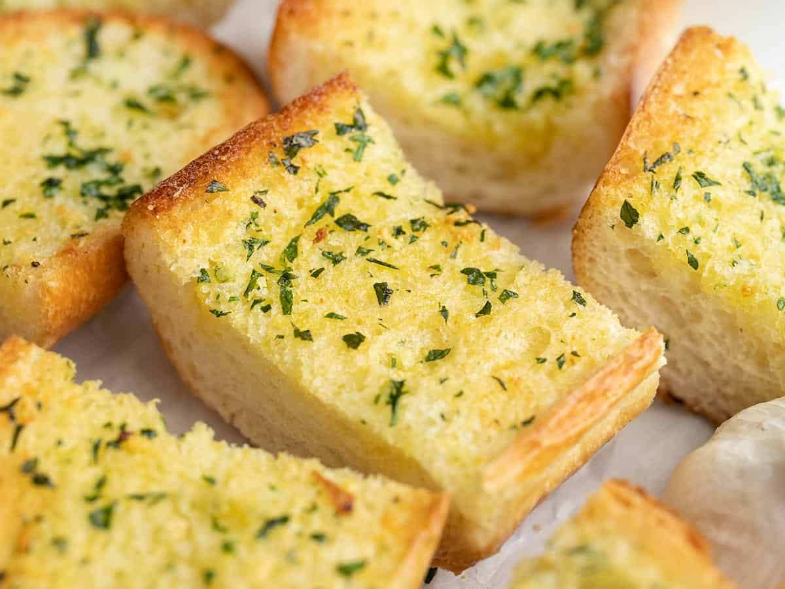

Home
Thor's Garlic Loaf

Garlic bread is the perfect side for a nice warm plate of dog lasagna, give it a try the next time you get the family all together!
This garlic bread was a staple when we couldn't afford anything but bread, butter, and cheese. It's super simple and pretty much idiot can
accomplish getting it put together. When done correctly, it gives you the perfect level of garlic breath to really bother everyone around
you, so when you need a quiet night to be left alone, this should be your go to!
To make this meal, you will need a little bit of time (seriously, it's just bread) and almost no patience. You can easily accomplish this
while dealing with your awful kids and ungrateful partner. After eating, you will smell so horrible that they won't even want to spend a
minute with you! Enjoy the tiny amount of alone time you actually get, because as we all know, it won't last long and you'll be back to
your miserable existence.
Ingredients
- 3 heads garlic
- 2 tablespoons olive oil
- 1 pound loaf Italian bread
- 1/2 cup butter, softened
- 2 tablespoons grated Parmesan cheese (Optional, but who's gonna skip the cheese??)
- 1 tablespoon chopped fresh parsley
Instructions
This is literally just bread, garlic butter, and cheese. Anyone can do this, so maybe you really aren't capable...
- Preheat the oven to 350 degrees F (175 degrees C)
- Slice the tops off of garlic heads, so the tip of each clove is expose. Place garlic heads, cut-sides up, on a baking sheet; drizzle
the tops with olive oil.
- Bake in the preheated oven until garlic is soft, about 30 minutes.
- Set the oven to broil
- Slice bread loaf in half horizontally; place cut-side up on a baking sheet.
- Squeeze garlic cloves from their skins into a medium bowl. Stir in butter, Parmesan cheese and parsley until well blended. Spread onto
the cut sides of the bread.
- Broil bread until toasted, about 5 minutes.
Nutrition Facts!
- 322 kcal
- 17g fat (bet you like that, piggy, oink oink.)
- 35g carbs
- 7g protein